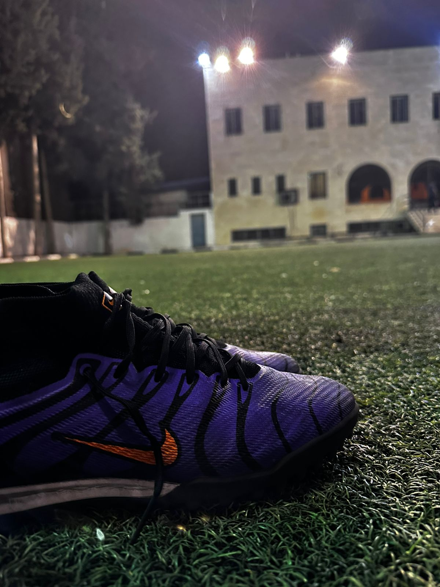
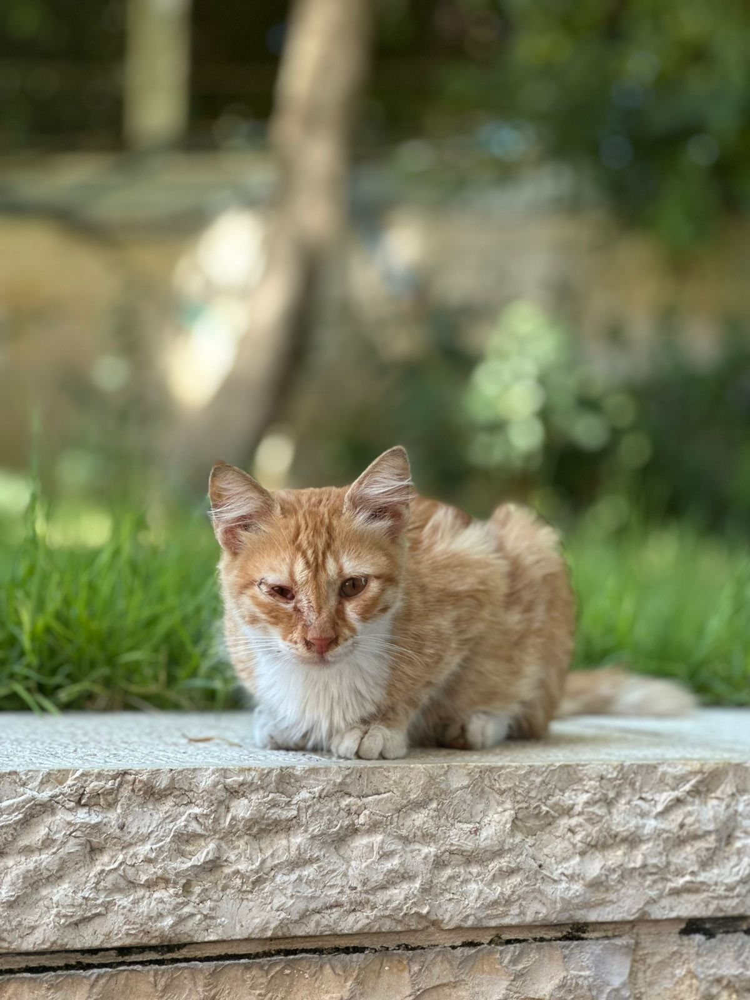

My Hobbies
- video games

- playing football 
- Photography 
Moayed Nasser
name is Moayed Nasser im 19 years old, im from Nablus My family origins belong to the occupied city of jaffa Iam studying computer science at Al-Najah National University.

When I grow up, I want to be a software developer who creates innovative and user-friendly applications that make people’s lives easier and more enjoyable. I envision myself working on projects that solve real-world problems, whether it’s through developing educational tools, enhancing communication platforms, or creating entertainment apps. My goal is to continuously learn and adapt to new technologies, collaborate with talented teams, and contribute to the ever-evolving tech industry. Ultimately, I want to make a positive impact on the world through my passion for coding and technology.